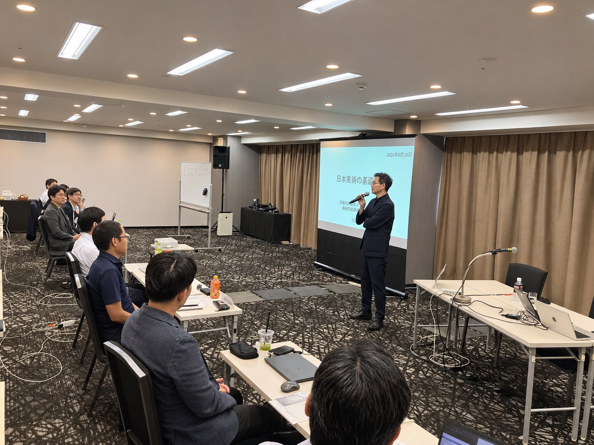

WHY OBSERVE
考え抜いた構想を、
伝わり、動き出す提案へ。
第8単位では、異業種の参加者が共同で取り組んできたチームプロジェクトの最終発表を行います。さらに、CEOプレゼンテーションに向けて、リーダーシップ・コミュニケーションやストーリーライン、メディア対応を学びます。
課題発見から提案までをどのように組み立て、他者からの問いを受けながら構想を磨くのか。EMCが重視する実践的な学びをご覧いただけます。

この単位で向き合うこと
共同探究を形にする
チームごとの最終発表を通じ、異なる視点を統合した提案を言葉にします。
経営構想を伝える
リーダーシップ・コミュニケーションとストーリーラインから、伝わる構成を考えます。
社会との対話を考える
メディア対応と危機発生時対応の基本を学び、経営者としての発信を見直します。
主なプログラム
- 2月12日
- チームプロジェクト最終発表会
担当：一條 和生 氏（IMD教授・一橋大学名誉教授）、パトリック・ラインメラ氏 - 2月13日 午前
- CEOプレゼンテーション準備
プレゼンテーションスキル／リーダーシップ・コミュニケーション／ストーリーライン - 2月13日 午後
- CEOプレゼンテーション準備／メディア対応のポイント
メディア対応および危機発生時対応
開催概要
- 開催日
- 2027年2月12日（金）・13日（土）
- 会場
- TKP新橋カンファレンスセンター
- 参加形式
- 会場での講義見学
- 参加費
- 無料
- 主催
- 一般社団法人日本能率協会
広告掲載前に、見学可能な日時・範囲、定員、申込先、ゲスト講師の表記を最終確認してください。本初稿は共有済みの2026年度第37期プログラム資料をもとに構成しています。